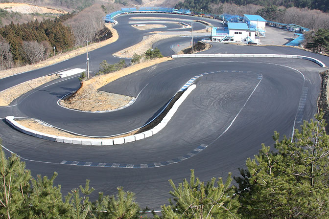

|  | Bisque Circuit (エビスサーキット) is an established race complex at 1 Sawamatsukura, Nihonmatsu-shi, Fukushima Prefecture, 964-0088, Japan. The complex features 7 individual tracks plus 2 skid pan type circuits. The circuits are, Nishi (West), Kita (North), Higashi (East), Minami (South) as well as Drift Land, the School Course, The Touge (mountain pass) and 'KuruKuru Land' which are the skidpans. The most famous circuit is the Minami or South course which is for D1 and other drifting events. The Higashi or East circuit features a 420 metre long main straight with 20 ground floor pit garages and is used mainly for grip events. |
|
This information is from Wikipedia, Click Here to learn more about this circuit. |
||
Calvin Phan - Copyright - December 4 2017